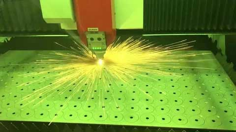

Стоимость лазерной резки металла зависит не только от толщины листа. На цену влияют материал, длина реза, объём партии, срочность и сложность контура. В этой статье мы покажем, как рассчитать стоимость самостоятельно — по той же формуле, что использует наш онлайн-калькулятор.
Если после прочтения останутся вопросы — позвоните: +7 (903) 002-18-83. Подготовим точный расчёт за 2 часа.
Из чего складывается стоимость лазерной резки
Цена формируется из четырёх основных параметров. Разберём каждый.
1. Материал и толщина
Каждый материал режется по-разному. Сталь — самый доступный вариант, нержавейка и алюминий дороже из-за физических свойств: они хуже проводят тепло, требуют больше мощности лазера и защитного газа. Чем толще лист, тем выше цена за погонный метр реза.
Пример цен за метр для популярных позиций (без НДС):
| Материал | Толщина | Цена за 1 м |
|---|---|---|
| Сталь / оцинковка | 3 мм | 18 ₽ |
| Нержавейка | 5 мм | 38 ₽ |
| Алюминий | 5 мм | 45 ₽ |
Полный прайс по 17 услугам — в разделе «Прайс-лист» на главной.

2. Длина реза
Основная единица измерения — погонный метр. Чем больше длина, тем выше базовая стоимость. Но при объёмах от 100 метров начинают действовать скидки — о них ниже.
3. Срочность
Если заказ нужно выполнить менее чем за 3 рабочих дня — применяется коэффициент 1.5. Это связано с перестройкой производственного графика и возможными сверхурочными. Обычный срок — 3–5 рабочих дней.
4. Сложность контура
Простая прямая резка дешевле. Сложная геометрия с множеством отверстий, острых углов и кривых требует больше машинного времени и программирования. Для нестандартных задач коэффициент обсуждается индивидуально.
Формула расчёта стоимости
Базовая формула, по которой работает наш калькулятор:
Стоимость = Цена_за_метр × Длина_реза × (1 − Скидка) × Коэф_срочности
Где:
- Цена_за_метр — из прайса, зависит от материала и толщины;
- Длина_реза — в погонных метрах;
- Скидка — 0, 5%, 10% или 15% в зависимости от объёма;
- Коэф_срочности — 1.0 (обычно) или 1.5 (срочно).
После расчёта без НДС добавляется НДС 22%:
Итоговая_цена = Стоимость × 1.22
Скидки за объём
Мы поощряем крупные заказы:
| Объём, метров | Скидка |
|---|---|
| до 100 | 0% |
| 101 – 500 | 5% |
| 501 – 2000 | 10% |
| от 2001 | 15% |
Минимальная стоимость заказа
Минимальная сумма заказа — 2000 ₽ (без НДС). Если по расчёту получается меньше, итоговая цена всё равно составит 2000 ₽. Это связано с затратами на подготовку станка и программирование.
Максимальный объём онлайн-расчёта
Калькулятор рассчитывает заказы до 10 000 погонных метров. Если нужно больше — позвоните менеджеру, рассчитаем индивидуально.
Примеры расчёта
Пример 1: Сталь 3 мм, 200 метров
Исходные данные: цена 18 ₽/м, длина 200 м, скидка 5% (объём 101–500 м), без срочности.
- База: 18 × 200 = 3 600 ₽
- Скидка 5%: 3 600 × 0.95 = 3 420 ₽
- Без НДС: 3 420 ₽
- С НДС 22%: 3 420 × 1.22 = 4 172 ₽
Пример 2: Нержавейка 5 мм, 50 метров — как срочность меняет цену
Возьмём цену 38 ₽/м для нержавейки 5 мм и длину 50 м. Покажем оба сценария.
Без срочности:
- База: 38 × 50 = 1 900 ₽
- Скидка: 0% (объём меньше 100 м)
- Расчёт: 1 900 ₽ → применяется минимум 2 000 ₽
- С НДС 22%: 2 440 ₽
Со срочностью (коэффициент 1.5):
- База: 1 900 ₽
- × 1.5 = 2 850 ₽ (это уже больше минимума, поэтому минимум не применяется)
- Без НДС: 2 850 ₽
- С НДС 22%: 3 477 ₽
Пример 3: Алюминий 5 мм, 600 метров (скидка 10%)
Исходные данные: цена 45 ₽/м, длина 600 м, скидка 10% (объём 501–2000 м), без срочности.
- База: 45 × 600 = 27 000 ₽
- Скидка 10%: 27 000 × 0.90 = 24 300 ₽
- Без НДС: 24 300 ₽
- С НДС 22%: 24 300 × 1.22 = 29 646 ₽
Как сэкономить на лазерной резке
1. Объединяйте заказы
Скидка 15% при объёме от 2000 метров — существенная экономия. Если у вас несколько партий, выгоднее запустить их вместе: одна наладка станка вместо трёх.
2. Планируйте сроки
Срочность увеличивает цену в 1.5 раза. Если есть возможность подождать 3–5 рабочих дней — сэкономите треть стоимости. Планируйте заказы заранее.
3. Оптимизируйте чертёж
Меньше отверстий, простая геометрия, минимальное количество врезок — всё это снижает машинное время и цену. Размещайте детали плотнее на листе, чтобы уменьшить отходы. Используйте стандартные толщины металла — они всегда дешевле.
Онлайн-калькулятор — расчёт за 1 минуту
Не хотите считать вручную? Воспользуйтесь нашим онлайн-калькулятором. Он работает по той же формуле, что описана выше, и учитывает:
- Материал (сталь, нержавейка, алюминий);
- Толщину от 1 до 20 мм;
- Длину реза;
- Срочность;
- Скидки за объём;
- НДС 22%.
Результат — моментально. Кнопка «Оформить заявку» автоматически перенесёт расчёт в форму — вам останется указать контакты и приложить чертёж.
Частые вопросы
Включён ли НДС в цены на сайте?
Нет. Все цены в прайсе и калькуляторе указаны без НДС. НДС 22% добавляется при оформлении заявки. Основание: ФЗ от 28.11.2025 №425-ФЗ.
Что считается срочным заказом?
Заказ со сроком выполнения менее 3 рабочих дней. В этом случае применяется коэффициент 1.5.
Какой минимальный заказ?
2000 ₽ без НДС для лазерной резки. Для пробивки — 1500 ₽ (за удар) или 2000 ₽ (за метр).
Какой максимальный объём можно заказать через калькулятор?
До 10 000 погонных метров. Для больших объёмов свяжитесь с менеджером по телефону +7 (903) 002-18-83 — рассчитаем индивидуально.
Включён ли материал в стоимость резки?
Цены указаны за услугу резки. Стоимость материала рассчитывается отдельно. Уточните у менеджера, нужен ли вам металл или вы предоставляете свой.
Работаете ли вы с юридическими лицами?
Да, мы работаем с юридическими лицами и ИП по договору. Предоставляем полный пакет закрывающих документов. Реквизиты компании — на странице «Реквизиты».
Нужен точный расчёт?
Пришлите чертёж в DXF, DWG или PDF — подготовим коммерческое предложение за 2 часа.